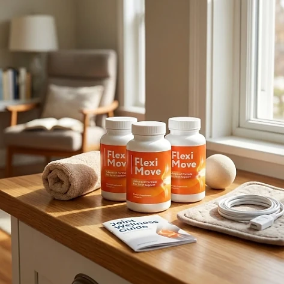
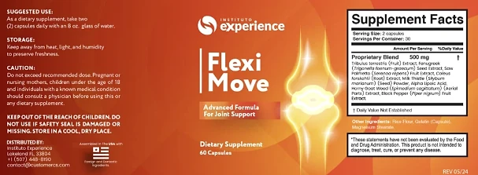

What Is Flexi Move And How Does It Work?
Flexi Move is a dietary supplement in capsule form designed to support joint comfort, flexibility, and healthy mobility for adults who want to address the stiffness and everyday discomfort in the knees, hips, back, shoulders, or hands that can build up with age and activity through a natural, dependable approach — without complicated routines or temporary quick fixes.
It utilizes a simple daily serving of two capsules that provides a 500 mg proprietary blend of Tribulus terrestris, Fenugreek, Saw Palmetto, Coleus forskohlii, Milk Thistle, Alpha Lipoic Acid, Horny Goat Weed, and Black Pepper, described on the label as an “Advanced Formula For Joint Support”, helping the body maintain its natural balance throughout the day.
The ingredients in Flexi Move are plant extracts, an antioxidant compound, and a black pepper extract. The official Flexi Move website is brief: the page reached through the official link shows the bottle, the label, and the available packages, and it does not publish a text explanation of how the formula works, so a careful buyer should rely on the label that comes on the bottle.
Rather than acting as a short-lived artificial fix, a supplement in this category is meant to offer daily nutritional support, working gradually alongside daily routines to help maintain comfortable movement, flexibility, and long-term wellness.
With consistent daily use, the formula is intended to provide continuous support for comfort when moving, easier mornings, and a gradual sense of well-being, especially when combined with a balanced diet, a healthy weight, and regular, gentle exercise.
From a practical standpoint, Flexi Move is a daily joint support capsule designed to support wellness from within — helping you stay active, comfortable, and in control of your health.
Assembled in the USA with foreign and domestic ingredients, according to the product label, Flexi Move is designed for regular daily use, focusing on safety, purity, and quality for those seeking a natural, non-prescription route to everyday joint comfort.
Flexi Move Ingredients
Every two-capsule serving of Flexi Move contains a 500 mg proprietary blend of eight ingredients listed on the Supplement Facts panel, presented on the label as support for the joints as part of a consistent daily routine:
Tribulus terrestris Fruit Extract: A traditional botanical commonly used in vitality and physical performance formulas.
Fenugreek Seed Extract: A seed long used in traditional wellness practices for strength and vitality.
Saw Palmetto Fruit Extract: A palm berry extract traditionally used in men's health formulas.
Coleus forskohlii Root Extract: A plant from the mint family studied for its role in metabolism.
Milk Thistle Seed Powder: A source of silymarin, associated with antioxidant protection.
Alpha Lipoic Acid: An antioxidant compound that helps protect cells against oxidative stress.
Horny Goat Weed Extract: An Epimedium botanical traditionally used for vitality and stamina.
Black Pepper Fruit Extract: Commonly added to formulas to support the absorption of other ingredients.
Together, these ingredients are intended to support comfort, mobility, and overall vitality from within. Two honest observations: the label does not show the amount of each ingredient, only the 500 mg total, and this is not the classic joint profile, since the blend has no glucosamine, chondroitin, collagen, or MSM and is closer to a general vitality formula. The other ingredients are rice flour, gelatin (capsule), and magnesium stearate, so the capsule is not suitable for vegetarian or vegan diets.
Flexi Move is designed for daily use, offering a natural, non-prescription approach to supporting joint comfort, without complicated routines.
Flexi Move Side Effects
Flexi Move is generally considered well tolerated and is designed for adults of different ages and lifestyles who are looking for a natural and balanced approach to joint comfort, especially those who prefer an easy daily capsule routine to support comfort, mobility, and well-being without resorting to risky solutions with severe side effects.
The label of Flexi Move publishes the Supplement Facts panel and the list of other ingredients, and states that the product is assembled in the USA with foreign and domestic ingredients, reinforcing consistency, safety, and reliability.
With no widespread reports of serious side effects, Flexi Move is generally considered a well-tolerated option. Some of its ingredients deserve attention: Coleus forskohlii and Horny Goat Weed can affect blood pressure, Fenugreek and Alpha Lipoic Acid can influence blood sugar, and Saw Palmetto and Tribulus act on hormones, so people who take medication for blood pressure or blood sugar, blood thinners, or hormone treatments should talk to their doctor first. Persistent joint pain or swelling should be evaluated by a doctor. It is not intended to diagnose, treat, cure, or prevent any disease, and individual results may vary.
According to the label, pregnant or nursing mothers, children under the age of 18, and individuals with a known medical condition should consult a physician before using Flexi Move. The label also says not to exceed the recommended dose, ensuring it fits safely within your personal wellness plan.
Flexi Move Dosage
The recommended Flexi Move dosage is two capsules a day, and it is designed to fit easily into a daily routine, making consistency simple and convenient. Formulated as an easy daily capsule, it requires no powders to mix, no drinks to prepare, and nothing to measure.
The recommended approach, as printed on the label, is to take two (2) capsules daily with an 8 oz. glass of water. The label does not specify a time of day; taking Flexi Move at the same time each day, for example at breakfast, makes the habit easier to keep and allows the ingredients to work consistently.
For best results, consistency is key. Each bottle contains 60 capsules, a one-month supply of 30 servings, and because nutritional support of this kind builds gradually, many people make it part of an ongoing wellness routine.
There is no need for complex schedules or multi-step routines. One simple daily serving is designed to build lasting support gradually alongside a balanced diet, a healthy weight, and an active lifestyle. The label also advises keeping the bottle away from heat, light, and humidity, in a cool, dry place, and not using it if the safety seal is damaged or missing.
As with any dietary supplement, it's important not to exceed the recommended dose and to check the label on your bottle. Flexi Move works best when used regularly, combined with proper hydration, balanced nutrition, and healthy daily habits.
Flexi Move – Refund Policy
You can order Flexi Move with confidence, knowing that every purchase is protected by a 60-day guarantee counted from the day the order was placed. This allows you to try the formula and decide if it delivers the support you expect.
According to the return policy linked on the official website, customers who are unsatisfied for any reason can return the product and request a refund within 60 days of the purchase date. All bottles must be sent back, whether they are opened, empty, or sealed, and the return shipping cost is paid by the customer.
How the refund process works: If you decide Flexi Move is not right for you, email customer support with "Refund Request" in the subject line, then send all the bottles and the packing slip to the return address given in the policy, with a note containing your full name and email. Once the package is received, your refund is processed, and you will receive a confirmation email.
Customer Support Contact Information: contact@customercs.com or +1 (507) 448-8190, as printed on the product label.
Refund Processing Time: According to the policy, processing takes between 5 and 10 days after the package arrives, and the time for the amount to appear on your statement depends on your bank or card company.
This refund policy is designed to give customers a clear and transparent experience when trying Flexi Move.
Flexi Move – Where To Buy
Flexi Move is sold through its official website, so if you decide to try it, it's important to be careful about where you purchase it. The official website is the only sales channel the manufacturer lists, and it does not point to marketplaces such as Amazon, eBay, or Walmart.
Listings on third-party platforms may look similar but cannot be verified as authentic, raising concerns about safety, quality, and ingredient freshness. Products purchased outside the official source may not be covered by the 60-day guarantee.
For this reason, it makes sense to purchase Flexi Move only through the official website. Buying directly from the official source ensures you receive the authentic original product, with access to customer support by phone and email and the full guarantee. Orders placed there go through a secure checkout, and the return and contact pages are linked at the bottom of the official page.
To avoid counterfeit batches and ensure maximum quality, always verify that you are ordering from the official Flexi Move website before completing your purchase.
To ensure you’re getting the authentic product, most users choose to visit the official website.
Is Flexi Move A Scam?
Based on what the official website and the product label disclose, Flexi Move does not appear to be a scam. It is a real capsule supplement, sold through an established retailer, and presented as support for joint comfort, flexibility, and everyday mobility as part of a consistent routine.
The ingredients used in Flexi Move — Tribulus terrestris, Fenugreek, Saw Palmetto, Coleus forskohlii, Milk Thistle, Alpha Lipoic Acid, Horny Goat Weed, and Black Pepper — are well known in the wellness field, and the label publishes a Supplement Facts panel with the full list. A fair point of criticism is that only the 500 mg total of the blend is disclosed, and that the blend is not a typical joint formula.
In addition to its formula, Flexi Move is assembled in the USA with foreign and domestic ingredients, according to the product label, which also identifies the distributor, with a city, a phone number, and a support email, with a focus on safety, purity, and consistency.
The official website publishes no customer testimonials and no explanation of the formula, so this review does not quote any. Expectations should stay realistic: results vary from person to person, and no supplement replaces medical care or prescribed treatment for joint problems.
Flexi Move is backed by a 60-day guarantee. The return steps, including sending back all bottles and paying the return shipping, are published in the policy linked on the official website, which gives customers a clear path if the product does not meet their expectations.
If you're looking for a simple daily capsule to support joint comfort, mobility, and well-being without complicated routines, Flexi Move is worth considering — especially when purchased directly from the official website, and after reading the label.
For those who want to verify product details or check current availability, the official Flexi Move website remains the safest option.

Check Availability On Official Website
